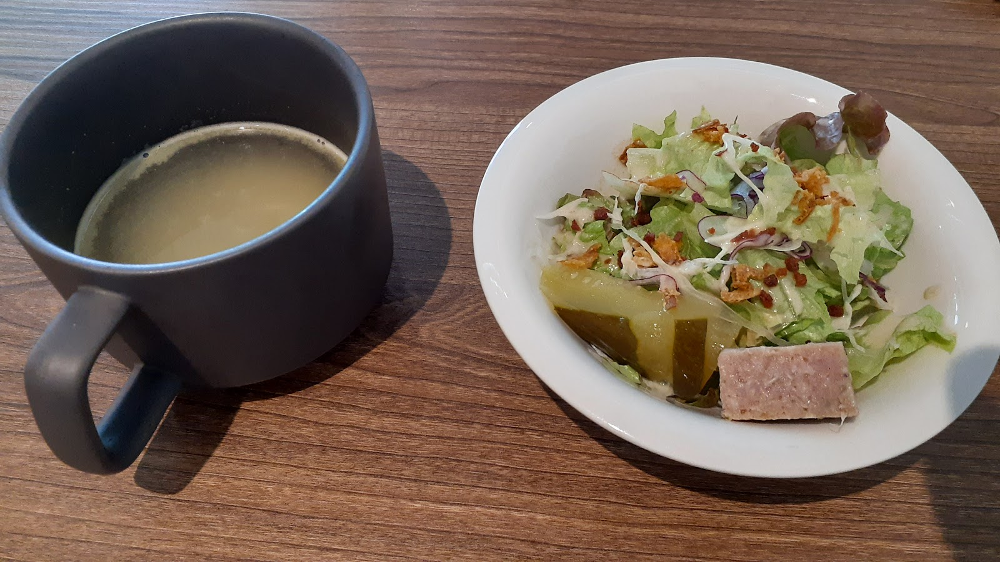
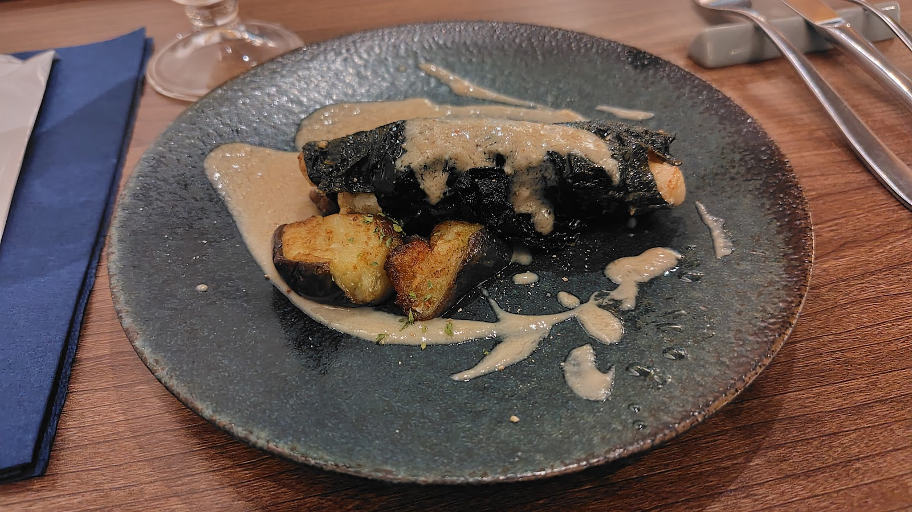

こだわり・お店紹介
「ビストロ キャトル」が大切にしていることを、少しだけご紹介します。
Family
家族で営む、あたたかな一軒
「ビストロ キャトル」は、家族で営む小さなビストロです。ホールに立つスタッフは、常連のお客様にも、初めていらしたお客様にも変わらない笑顔でお迎えします。こじんまりとした店内だからこそ、お一人でのお食事も、ご家族やご友人との時間も、どちらも心地よく過ごしていただけると考えています。

写真: kiyumi kanata(Google マップ)Preparation
丁寧な仕込みへのこだわり
スープやサラダ、テリーヌなど、一皿の下ごしらえには手間と時間をかけています。素材選びから仕込みまで、ひとつひとつの工程を丁寧に積み重ねることが、私たちの料理の基本です。

写真: Keiichi Iida(Google マップ)Cooking
一皿ごとに、心を込めて
焼く、蒸す、包むといった手間のかかる調理も、一皿ずつ丁寧に仕上げています。効率よりも、目の前のお客様に満足いただける一皿を大切にする。それが厨房の変わらない姿勢です。
Atmosphere
落ち着いた店内で
天井の高い開放感のある空間に、ゆとりを持たせた席の配置。こじんまりとした中にも清潔感があり、日常のひとときにも、少し特別な日にも寄り添える落ち着いた店内です。